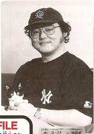

Soon after the first few Pokemon video games, a company known as Media Factory began production of the Pokemon Trading Card Game. The first batch of Pokemon cards, also known as the "First Gen" or "Gen 1", included over 100 cards. Every single one of these Gen 1 Pokemon Cards were hand-drawn by the artists Ken Sugimori, Mitsuhiro Arita and Keiji Kinebuchi.